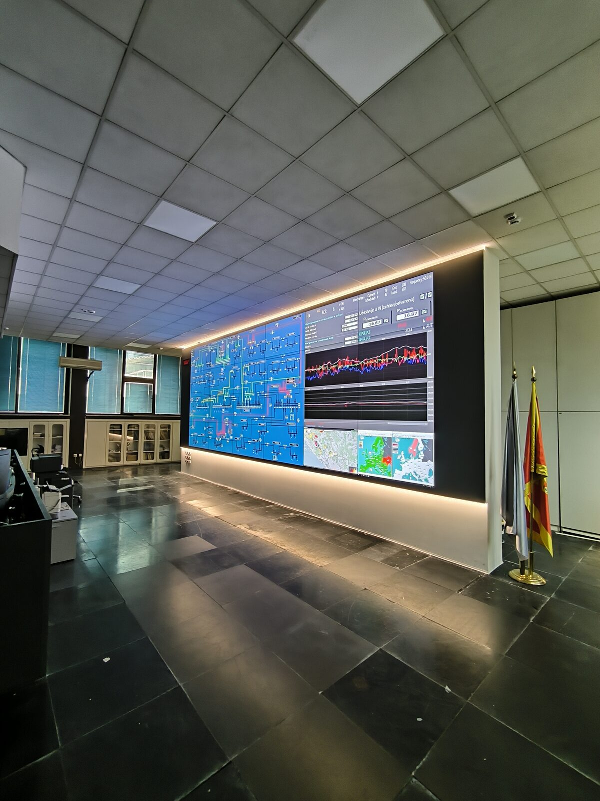

6×4 video wall
24 professional 55-inch displays with ultra-thin 0.44 mm bezels, working together as a single visual surface.

As main contractor, TRS delivered a 6×4 video wall for the dispatch centre of CGES, Montenegro's national transmission system operator, providing a continuous real-time display of power grid data.

CGES is Montenegro's national transmission system operator, responsible for monitoring and balancing the power grid in real time. The video wall is the central display of the dispatch centre, which operators rely on 24 hours a day.
As main contractor, TRS carried out the complete delivery, installation and configuration of the new video wall, including connecting the SCADA system, calibration and handover to the operator team.
The solution is designed for continuous operation, easy maintenance and real-time content management.
24 professional 55-inch displays with ultra-thin 0.44 mm bezels, working together as a single visual surface.
Each panel can be pulled out for on-site service or replacement, without dismantling the wall or interrupting work in the control room.
Real-time distribution of multiple data sources across the wall, with content arranged from the operator control panel.
Connecting the SCADA grid monitoring system, colour and geometry calibration of all panels, and operator team training.
The timelapse shows the video wall being mounted and prepared in the dispatch centre.
Since handover, the video wall has continuously displayed the grid topology, AGC/ACE parameters and exchange flows.



Push-out mounts and tidy cabling allow individual panels to be serviced without interrupting operations.


Since handover, the video wall has continuously displayed the grid topology, AGC/ACE parameters and exchange flows, as constant support for monitoring the power system.
The integrated push-out mounting system allows individual panels to be serviced or replaced on site while the control room stays fully operational.
Thanks to bezels of just 0.44 mm and control through a single VuWall platform, operators see complex grid data as one continuous image, not as 24 separate screens.